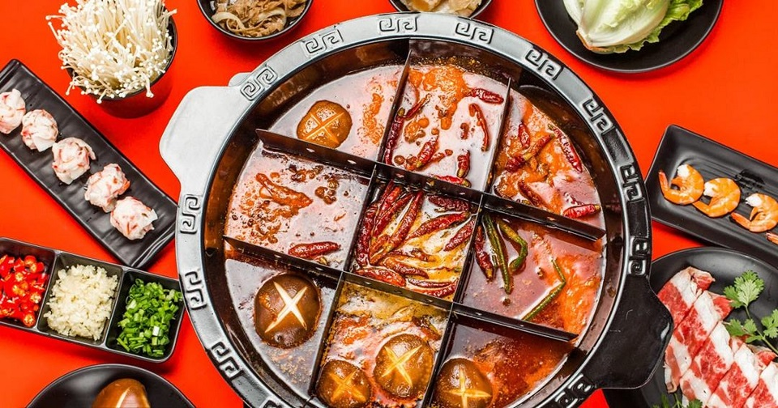
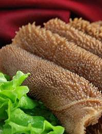
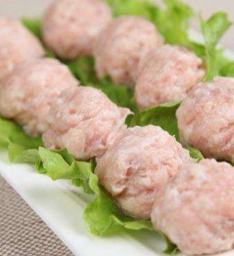
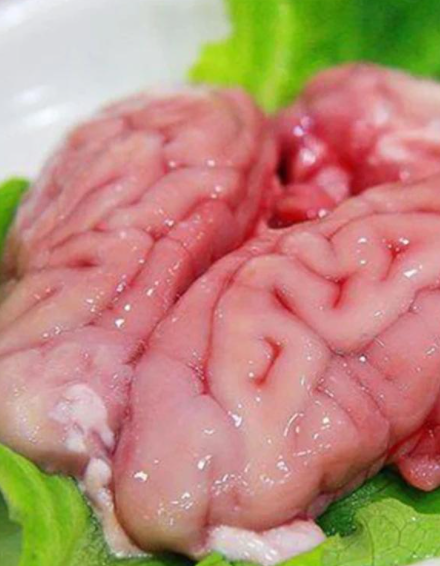
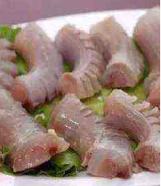

樱桃山火锅店成立于1994年，是一家以经营川味火锅为主的连锁品牌，创始人为樱桃山王某人。
1994年3月25日，四川省简阳市樱桃山火锅城正式开业。2018年5月17日，樱桃山在港交所递交上市申请。
9月19日，樱桃山确定最终发行价，每股17.8港元。
9月26日，樱桃山正式登陆香港资本市场。2020年，樱桃山净利润3.093亿元，同比下降86.8%。
2021年，《财富》中国500强排行榜，排名360。 11月5日，樱桃山公司
决定在2021年12月31日逐步关停300家左右客流量相对较低及经营业绩不如预期的樱桃山门店。
- 
毛肚是牛胃的瓣胃部分，白色的毛肚是漂过的，属于冷冻食品。
- 
猪肉丸是猪肉做的丸子。猪肉丸是一道由猪瘦肉，肥猪肉等食材制成的美食。
- 
在中国饮食中，有以形补形这样的说法，而这说法应用在猪脑花上面就十分正确。
- 
牛鞭的胶原蛋白含量高达98%，也是女性美容驻颜首选之佳品